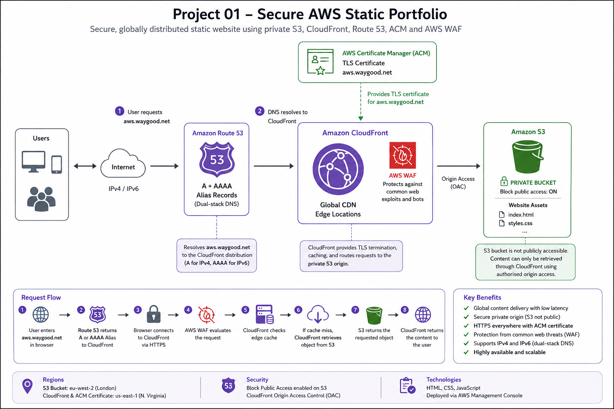

A secure, globally distributed static website built on AWS using private S3 storage, CloudFront, Route 53, ACM and AWS WAF.
The objective of this project was to design and deploy a secure static website using managed AWS services while keeping the Amazon S3 origin private and delivering content globally through Amazon CloudFront.
The environment was initially deployed manually through the AWS Management Console in order to understand the function and interaction of each AWS component. The infrastructure will later be recreated using Terraform as Infrastructure as Code.
The website uses Route 53 for DNS, CloudFront for global content delivery, AWS Certificate Manager for HTTPS, AWS WAF for web protection, and a private Amazon S3 bucket as the origin.

Stores the static HTML, CSS and website assets. Public access to the S3 bucket is blocked.
Provides global content delivery, HTTPS termination, edge caching and controlled access to the private S3 origin.
Provides authoritative DNS for aws.waygood.net using A and AAAA Alias records pointing to the CloudFront distribution.
Provides the TLS certificate used by CloudFront to secure HTTPS connections to aws.waygood.net.
Provides Layer 7 protection against common web threats and malicious requests at the CloudFront edge.
Route 53 provides dual-stack DNS for the website. An A Alias record supports IPv4 clients while an AAAA Alias record supports IPv6 clients.
aws.waygood.net
A Alias → CloudFront → IPv4
AAAA Alias → CloudFront → IPv6
CloudFront is the public entry point for the application. The S3 bucket is not exposed directly to the public Internet.
The Amazon S3 bucket has Block Public Access enabled. Website content can only be retrieved through CloudFront using authorised origin access.
Direct Internet Request
|
v
S3 Object URL
|
v
ACCESS DENIED
Internet
|
v
CloudFront
|
v
Origin Access Control
|
v
Private S3
|
v
Website Content
Region: eu-west-2 (London)
AWS Certificate Manager region: us-east-1 (N. Virginia)
CloudFront requires ACM certificates used for viewer HTTPS connections to be created in us-east-1.
Result: Access Denied
This confirms the S3 origin is not publicly accessible.
Result: Website returned successfully.
Result: https://aws.waygood.net returned successfully using a valid AWS Certificate Manager TLS certificate.
AWS: S3, CloudFront, Route 53, ACM, AWS WAF
Networking: DNS, IPv4, IPv6, HTTPS, TLS, CDN, HTTP caching
Security: Private S3 origin, Origin Access Control, TLS, AWS WAF and restricted public access
Architecture: Managed services, global content delivery, dual-stack DNS and secure origin design
The next phase of the project will recreate the infrastructure using Terraform and store the configuration in GitHub as Infrastructure as Code.
Further enhancements will include monitoring, logging, improved cache management and automated deployment.